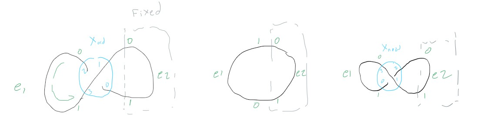
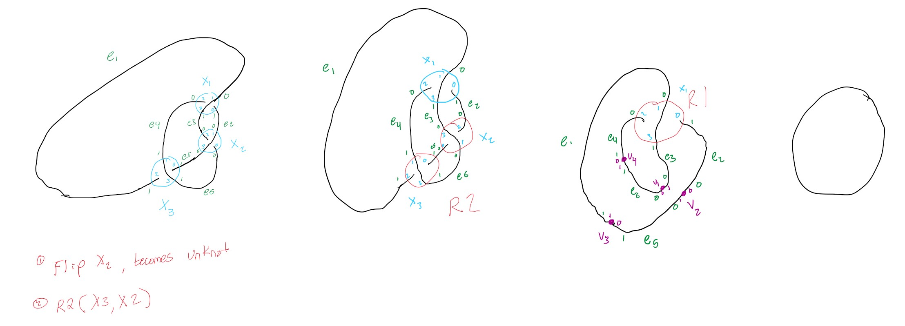

Crossing Swap¶
# Anti-Reidemeister Moves
## Check one: Unknot-to-unknot
If we take an unknot and twist it to form an infinity symbol then it will have one crossing. If we untwist it, and then twist it in the opposite direction we will also get an infinity symbol with one crossing. Swapping the crossing order should switch between the two. All three should have the unknot Yamada polynomial
{kind=link}
Example Test Function¶
1def test_crossing_swap_1(poly_unknot, unknot_inf_cw_2e_0v_1c_1, unknot_inf_ccw_2e_0v_1c_1):
2
3 sgd_1 = unknot_inf_cw_2e_0v_1c_1
4 sgd_2 = unknot_inf_ccw_2e_0v_1c_1
5
6 # Ensure both unknots have the same Yamada polynomial
7 sgd_1_yp = sgd_1.yamada_polynomial()
8 sgd_2_yp = sgd_2.yamada_polynomial()
9 assert sgd_1_yp == poly_unknot
10 assert sgd_2_yp == poly_unknot
11
12 # There should only be one possible crossing swap
13 arm = available_crossing_swaps(sgd_1)
14 assert len(arm) == 1
15 assert arm[0] == 'c1'
16
17 # Ensure the crossing swap is correct
18 sgd_cs = apply_crossing_swap(sgd_1, arm[0])
19
20 sgd_cs_yp = sgd_cs.yamada_polynomial()
21 assert sgd_cs_yp == poly_unknot
## Check two: knot-to-unknot
We define a circle with a figure-eight knot in it. If we apply a crossing swap to the middle crossing, then It should become the unknot. Applying the crossing swap should also make an R2 and then an R1 move possible (which wouldn’t affect the Yamada polynomial, but we should make sure that it still is detected and can be correctly applied)
{kind=link}
Example Test Function¶
1def test_crossing_swap_2(poly_unknot):
2 e1 = Edge(1)
3 e2 = Edge(2)
4 e3 = Edge(3)
5 e4 = Edge(4)
6 e5 = Edge(5)
7 e6 = Edge(6)
8
9 c1 = Crossing("c1")
10 c2 = Crossing("c2")
11 c3 = Crossing("c3")
12
13 c1[0] = e2[1]
14 c1[1] = e1[0]
15 c1[2] = e4[0]
16 c1[3] = e3[1]
17
18 c2[0] = e6[0]
19 c2[1] = e2[0]
20 c2[2] = e3[0]
21 c2[3] = e5[0]
22
23 c3[0] = e5[1]
24 c3[1] = e4[1]
25 c3[2] = e1[1]
26 c3[3] = e6[1]
27
28 sgd = SpatialGraphDiagram(edges=[e1, e2, e3, e4, e5, e6], crossings=[c1, c2, c3])
29
30 yp_before = sgd.yamada_polynomial()
31 # TODO Calculate what the Yamada polynomial should be for the original diagram, but we at least knot it should not be the unknot Yamada polynomial
32 assert yp_before != poly_unknot
33
34 arm = available_crossing_swaps(sgd)
35
36 # There should be 3 possible crossing swaps
37 assert len(arm) == 3
38 assert set(arm) == {'c1', 'c2', 'c3'}
39
40 # Ensure the crossing swap is correct
41 sgd = apply_crossing_swap(sgd, 'c1')
42 yp_after = sgd.yamada_polynomial()
43 assert yp_after == poly_unknot
44
45 # Ensure the R2 move is correct
46 sgd_has_r2 = available_r2_moves(sgd)
47 assert len(sgd_has_r2) > 0
48 sgd = apply_r2_move(sgd, ("c2", "c3"))
49 yp_after_r2 = sgd.yamada_polynomial()
50 assert yp_after_r2 == poly_unknot
51
52 # Ensure the R1 move is correct